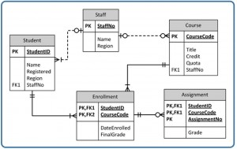
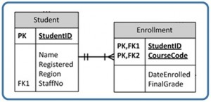
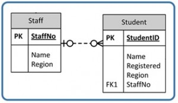
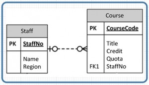
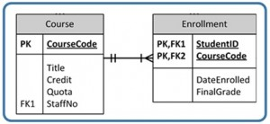
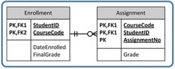

Appendix A: A university registration data model
الملحق A: نموذج بيانات تسجيل في جامعة
فيما يلي بيان بمتطلبات البيانات لمنتج يهدف إلى دعم تسجيل (registration) طلاب جامعة افتراضية للتعلّم الإلكتروني ومساعدتهم.
تحتاج جامعة للتعلّم الإلكتروني إلى الاحتفاظ ببيانات طلابها وموظفيها، وبالمقررات (courses) التي تقدّمها، وبأداء الطلاب الذين يدرسون مقرراتها. وتُدار الجامعة في أربع مناطق جغرافية (إنجلترا واسكتلندا وويلز وأيرلندا الشمالية).
ينبغي تسجيل معلومات كل طالب أولًا عند التسجيل. ويشمل ذلك رقم تعريف الطالب الصادر في حينه، واسمه، وسنة التسجيل، والمنطقة التي يقع فيها الطالب. ولا يُشترط على الطالب أن يسجل في أي مقررات عند التسجيل؛ إذ يمكن أن يحدث التسجيل في مقرر في وقت لاحق.
يجب أن تتضمّن المعلومات المسجَّلة لكل عضو في هيئة المعلّمين التربويين والاستشاريين رقم الموظف واسمه والمنطقة التي يقع فيها. وقد يعمل كل عضو من هيئة التدريس (faculty member) مرشدًا أكاديميًا (counsellor) لطالب أو أكثر، ومعلّمًا تربويًا (tutor) لطالب أو أكثر في مقرر أو أكثر. ومن المحتمل ألّا يكون هناك في وقت ما بعينه طلاب مسندون إلى عضو من هيئة التدريس ليرشدهم أو يكون معلّمًا تربويًا لهم.
لكل طالب مرشد أكاديمي واحد يُحدَّد عند التسجيل، وهذا المرشد يدعم الطالب طوال مسيرته الجامعية. ويُخصَّص لكل طالب معلّم تربوي مستقل لكل مقرر يسجل فيه. ولا يمكن لعضو هيئة التدريس أن يكون مرشدًا أو معلّمًا تربويًا لطالب إلا إذا كان ذلك الطالب مقيمًا في المنطقة نفسها التي يقيم فيها عضو هيئة التدريس.
كل مقرر متاح للدراسة يجب أن يكون له رمز مقرر وعنوان وقيمة بالنقاط المعتمدة (credit points). والمقرر إما مقرر بـ 15 نقطة أو مقرر بـ 30 نقطة. وقد يكون للمقرر حصة (quota) تحدد عدد الطلاب المسجلين فيه في كل مرة يُطرح فيها. ولا يلزم أن يكون في المقرر أي طلاب مسجلين (مثل مقرر كُتب حديثًا وطُرح للدراسة).
مقيَّد عدد المقررات التي يمكن للطلاب التسجيل فيها في أي وقت واحد. ولا يمكنهم دراسة مقررات في وقت واحد إذا تجاوز مجموع نقاطهم 180 نقطة.
لأغراض التقييم، يمكن أن يكون للمقرر ذي الـ 15 نقطة ما يصل إلى ثلاثة واجبات في كل مرة يُطرح فيها، ويمكن أن يكون للمقرر ذي الـ 30 نقطة ما يصل إلى خمسة واجبات في كل مرة. وتُسجَّل درجة الواجب في أي مقرر كعلامة من 100.
قاعدة بيانات الجامعة أدناه هي نموذج بيانات (data model) ممكن واحد يصف مجموعة المتطلبات أعلاه. ويتكوّن النموذج من عدة أجزاء، تبدأ بمخطط الكيانات والعلاقات (ERD) (entity relationship diagram) ثم يليها وصف مكتوب لأنواع الكيانات والقيود (constraints) والافتراضات.
عملية التصميم
انظر الشكل A.1.
- الخطوة الأولى هي تحديد البذور (kernels). وهذه عادة أسماء: Staff وCourse وStudent وAssignment.
- الخطوة التالية هي توثيق جميع الخصائص (attributes) لكل كيان. وهنا تحتاج إلى التأكد من أن جميع الجداول (tables) مطبَّعة (normalized) بصورة صحيحة.
- أنشئ مخطط الكيانات والعلاقات (ERD) الأولي وراجعه مع المستخدمين.
- أدخل تعديلات على مخطط الكيانات والعلاقات بعد مراجعته إذا لزم الأمر.
- تحقّق من نموذج الكيانات والعلاقات مع المستخدمين لإنهاء التصميم.

الكيان (Entity)
Student (StudentID, Name, Registered, Region, StaffNo)
Staff (StaffNo, Name, Region) – يحوي هذا الجدول المحاضرين (instructors) وغيرهم من أعضاء هيئة التدريس.
Course (CourseCode, Title, Credit, Quota, StaffNo)
Enrollment (StudentlD, CourseCode, DateEnrolled, FinalGrade)
Assignment (StudentID, CourseCode, AssignmentNo, Grade)
القيود (Constraints)
- لا يمكن لعضو هيئة التدريس أن يكون معلّمًا تربويًا أو مرشدًا أكاديميًا إلا للطلاب الموجودين في المنطقة نفسها التي يقع فيها.
- لا يمكن للطلاب أن يسجلوا في مقررات تتجاوز قيمتها 180 نقطة في أي وقت واحد.
- الخاصية Credit (في Course) لها قيمة 15 أو 30 نقطة.
- يمكن أن يكون للمقرر ذي الـ 30 نقطة ما يصل إلى خمسة واجبات؛ ويمكن أن يكون للمقرر ذي الـ 15 نقطة ما يصل إلى ثلاثة واجبات.
- الخاصية Grade (في Assignment) لها قيمة عبارة عن علامة من 100.
الافتراضات (Assumptions)
- لكل طالب تسجيل واحد على الأكثر في المقرر، إذ لا يُسجَّل سوى التسجيلات الحالية.
- لا يمكن تسليم الواجب إلا مرة واحدة.
العلاقات (تشمل التعددية (cardinality))
بالاستناد إلى الشكل A.2، لاحِظ أن الطالب (السجل) مرتبط (مسجل) بعدد من المقررات يتراوح بين 1 كحد أدنى وعدد كبير كحد أقصى.
يجب أن يكون لكل تسجيل طالب صالح.
لاحظ: بما أن StudentID جزء من المفتاح الأساسي (PK)، فلا يمكن أن يكون فارغًا (null). لذلك، يجب أن يكون أي قيمة تُدخَل لـStudentID موجودة في جدول Student من مرة واحدة على الأقل إلى مرة واحدة كحد أقصى. ويكون هذا واضحًا لأن المفتاح الأساسي لا يمكن أن يحوي تكرارات.

راجع الشكل A.3. سجل عضو هيئة التدريس (معلّم تربوي) مرتبط بعدد من الطلاب يتراوح بين 0 كحد أدنى وعدد كبير كحد أقصى.
قد يكون لسجل الطالب معلّم تربوي أو قد لا يكون.

لاحظ: يسمح الحقل StaffNo في جدول Student بالقيم الفارغة (null) – وهي ممثَّلة بالرقم 0 على الجانب الأيسر. لكن إذا وُجدت قيمة StaffNo في جدول الطلاب فيجب أن توجد في جدول Staff مرة واحدة على الأكثر – وهي ممثَّلة بالرقم 1.
راجع الشكل A.4. سجل عضو هيئة التدريس (محاضر) مرتبط بعدد من المقررات يتراوح بين 0 كحد أدنى وعدد كبير كحد أقصى.
قد يكون للمقرر محاضر أو قد لا يكون.
لاحظ: إن StaffNo في جدول Course هو المفتاح الأجنبي (FK)، ويمكن أن يكون فارغًا. وهذا يمثّل الرقم 0 على الجانب الأيسر من العلاقة. وإذا كانت هناك بيانات في StaffNo، فيجب أن تكون في جدول Staff مرة واحدة على الأكثر. وهذا ممثَّل بالرقم 1 على الجانب الأيسر من العلاقة.

راجع الشكل A.5. يجب أن يُطرح المقرر (في التسجيلات) من مرة واحدة على الأقل إلى عدد كبير من المرات.
يجب أن يحتوي جدول Enrollment على مقرر صالح واحد على الأقل إلى عدد كبير.

راجع الشكل A.6. يمكن أن يكون للتسجيل عدد من الواجبات يتراوح بين 0 كحد أدنى وعدد كبير كحد أقصى.
يجب أن يرتبط الواجب بعدد من عمليات التسجيل يتراوح بين 1 على الأقل و1 كحد أقصى.
لاحظ: يجب أن يحتوي كل سجل في جدول Assignment على سجل تسجيل صالح. ويمكن أن يرتبط سجل التسجيل الواحد بعدة واجبات.

نسبة العمل (Attribution)
هذا العمل تكييف (adaptation) وليس اشتقاقًا (derivation)، لأن المؤلف كتب نصفه. المصدر: http://openlearn.open.ac.uk/mod/oucontent/view.php?id=397581§ion=8.2